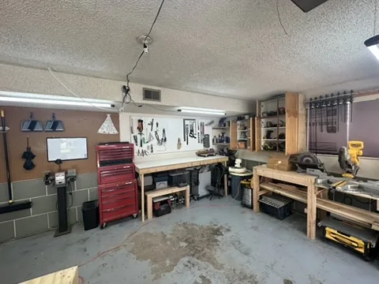
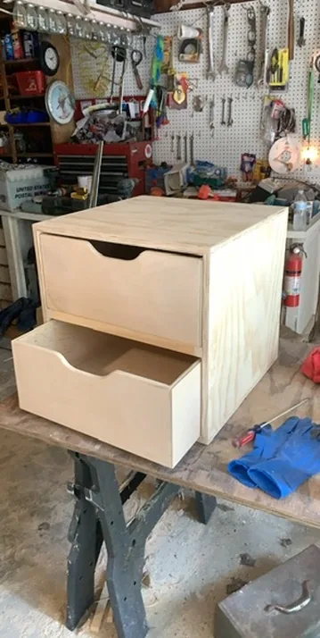
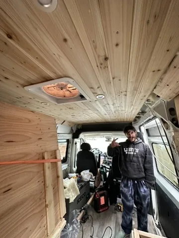

CNC, shop and vehicle builds
CNC/engraving work, workshop furniture/storage and vehicle interiors.

The idea
This entry preserves the wider fabrication work already confirmed: CNC/engraving projects, workshop furniture and storage, and vehicle interiors. The common aspiration is learning tools and techniques by solving physical problems, including building the spaces and systems that support other work. The categories are confirmed, but individual project boundaries have not yet been documented well enough for a specific manufacturing story.

How it works
This is a physical build, not software to launch locally. Its use is the object’s actual purpose described above.
Present actual whole-object and detail photographs when available; no generated illustration is a substitute for an evidence photo.

Inside the build
Digital fabrication
CNC and engraving connect digital preparation to a physical result. No machine, controller, cutter, material or CAM strategy is named without actual evidence.
Making the workshop useful
Furniture and storage are part of the workshop’s working infrastructure. Photos and dimensions are needed before describing a specific bench, cabinet, mount or organizational system.
Working in an existing space
Vehicle interiors involve a real surrounding structure, but the vehicle, component types and any electrical or structural work are not specified here. Those details should be documented project by project.

What I learned
Connect digital and physical workflows
These categories are a natural place to discuss the move from a design file or layout into an object. They do not establish that every wooden build was made on a CNC machine.
A workshop can be a project
Storage and furniture can reveal the practical side of making: creating an environment in which future projects are easier to do. This motivation fits the portfolio without inventing a completed shop system.